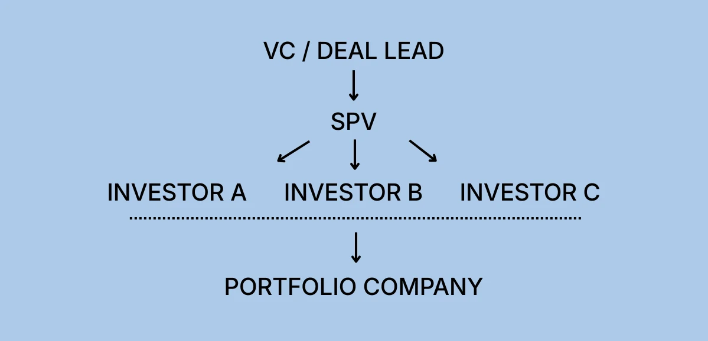

An attractive venture investment does not always fit neatly inside an existing fund.
A VC may have reached a concentration limit. A fund may not have enough reserves to take its full allocation. Existing LPs may want additional exposure to a portfolio company. An emerging manager may have access to a compelling deal before raising a traditional fund. Or a syndicate lead may want to bring several investors into one transaction without putting every investor directly onto the startup's cap table.
That is where a special purpose vehicle, or SPV, can become useful.
In venture capital, an SPV is typically a separate legal entity created to pool capital from multiple investors for a specific investment, often a single startup or private company.
But there is an important distinction:
Creating the legal entity is only one step in setting up an SPV.
A venture SPV also requires decisions around allocation, economics, investor eligibility, securities exemptions, legal documentation, banking, capital collection, regulatory filings, tax reporting, follow-on rights, investor communications, distributions, and eventually dissolution.
For a VC, the real question is therefore not:
"How quickly can I create an LLC?"
It is:
"How do I get from an investment opportunity to a properly structured, funded, closed, and administered SPV?"
This guide walks through that process from the perspective of a venture investor.
Quick answer: To set up an SPV for a venture capital investment, a VC typically confirms the startup allocation, determines how much will be invested through the primary fund versus the SPV, defines the SPV economics, selects a legal and regulatory structure, forms the entity, prepares governing and subscription documents, onboards investors, collects capital, funds the startup, completes required regulatory filings, and administers the vehicle through exit and final distribution.
What Is an SPV in Venture Capital?
A venture capital SPV is a legal vehicle formed to make a specific investment or pursue a narrowly defined investment purpose.
A common structure is:

The investors own interests in the SPV.
The SPV owns the underlying securities in the startup.
From the portfolio company's perspective, this can consolidate multiple participating investors behind a single entity rather than adding every underlying investor directly to its cap table.
That distinction is important because a syndicate and an SPV are not necessarily the same thing.
A syndicate describes the group of investors participating in a transaction.
The SPV is the legal vehicle that can be used to pool those investors into the deal.
Why Do VCs Use SPVs?
SPVs are particularly useful when a VC wants to execute a specific investment without putting the entire transaction inside a traditional blind-pool fund.
Common situations include:
- the fund has secured more allocation than it can invest itself;
- the fund has reached an internal concentration limit;
- reserves are insufficient for a follow-on round;
- existing LPs want additional exposure to a specific portfolio company;
- a manager wants to offer co-investment opportunities;
- multiple smaller investor checks need to be consolidated;
- an emerging manager has access to an investment before raising a traditional fund;
- the opportunity involves a secondary transaction;
- a deal falls outside the fund's normal mandate but remains attractive to certain investors.
Consider a simple example.
A venture fund receives a $3 million allocation in a Series B round.
The fund's portfolio construction model allows it to invest only $1.5 million.
Instead of surrendering the remaining allocation, the manager may choose to invest:
$1.5 million through the primary fund
plus
$1.5 million through an SPV offered to eligible investors
The startup still deals with the fund and SPV as structured counterparties, while the manager can potentially preserve more of the allocation.
This is the practical value of a venture SPV:
deal-specific flexibility.
SPV vs. Venture Fund: Which Should a VC Use?
An SPV does not necessarily replace a venture fund.
The two structures solve different problems.
Venture Capital SPV
Traditional VC Fund
Investment scope
Usually one company or transaction
Portfolio of companies
Investment decision
Investors can evaluate a known deal
LPs commit before all investments are identified
Capital deployment
Deal-specific
Typically deployed across several years
Diversification
Concentrated
Multiple portfolio companies
Vehicle duration
Linked largely to the underlying investment
Often structured for a multi-year fund life
Investor experience
Opt into a specific opportunity
Commit to the manager's overall strategy
Primary use
Co-investment, syndication, special opportunities
Building a diversified venture portfolio
The better question for a VC is:
Does this investment belong inside the existing fund, or does it make more sense as a separate vehicle?
That decision should happen before the SPV is launched.
How to Set Up an SPV for a Venture Capital Investment
Step 1: Secure the Investment Opportunity First
One of the easiest mistakes to make is treating SPV formation as the first step.
It usually should not be.
The first step is establishing what you are actually investing in.
Before launching the vehicle, determine:
- the portfolio company;
- investment round;
- security being purchased;
- proposed investment amount;
- investment price;
- allocation available;
- expected closing date;
- whether the investment is primary or secondary;
- information rights;
- voting rights;
- transfer restrictions;
- pro rata rights;
- any company-specific SPV requirements.
Most importantly:
Is your allocation actually confirmed?
There is a significant difference between:
"The founder thinks we can probably get $2 million."
and:
"The company has confirmed a $2 million allocation for our vehicle."
Venture rounds move.
Existing investors exercise pro rata rights. New lead investors negotiate allocations. Rounds become oversubscribed. Founders resize rounds. Closing schedules change.
A manager should understand how firm the allocation is before raising an SPV around it.
A practical sequence might look like:
Deal access → indicative allocation → company confirmation → investor soft circles → final allocation → subscriptions → capital call → closing
The exact sequence varies by transaction, but the principle remains the same:
Do not treat a soft allocation as though it were a guaranteed allocation.
Step 2: Decide What Belongs in the Fund and What Belongs in the SPV
For established VCs, this is often the first genuinely strategic SPV decision.
Suppose a fund receives a $5 million allocation.
The manager needs to decide:
- How much should the primary fund invest?
- How much should LPs be offered through an SPV?
- Does the fund's investment mandate permit the transaction?
- Are concentration limits relevant?
- Does the fund have enough reserves?
- Do existing LP agreements create co-investment expectations or restrictions?
- Could allocating a particularly attractive deal away from the main fund create a conflict?
The decision should have a defensible investment rationale.
For example:
Scenario A: Concentration limit
The fund wants to invest $4 million but portfolio construction limits it to $2.5 million.
An SPV may be appropriate for the remaining $1.5 million.
Scenario B: Follow-on opportunity
A high-performing portfolio company raises another round, but the fund has limited reserves.
An SPV may allow interested LPs to participate without forcing the manager to abandon its pro rata opportunity.
Scenario C: Opportunity outside the fund mandate
A manager sees a compelling deal that falls outside the existing fund's strategy.
That does not automatically mean it should be placed into an SPV. The manager should first consider fund documentation, fiduciary obligations, conflicts, and allocation policies with counsel.
Experienced LPs care about how opportunities are allocated.
The SPV should therefore complement the manager's fund strategy rather than become a mechanism for arbitrarily moving attractive investments outside the primary fund.
Step 3: Test Investor Demand Before Overbuilding the Vehicle
Before committing substantial resources to an SPV, managers often want reasonable confidence that the allocation can actually be filled.
This is where soft circles can be useful.
For example:
Potential investor
Indicative interest
LP A
$500,000
LP B
$250,000
Family office C
$500,000
Investor D
$100,000
Investor E
$250,000
Total soft-circled
$1.6 million
Against a target SPV size of $1.5 million, the manager has reasonable initial visibility into demand.
But a soft circle is not necessarily committed capital.
Investors may change their minds. Compliance may prevent participation. Documents may not be signed. Wires may arrive late.
For this reason, VCs should distinguish clearly between:
interest → subscription → accepted subscription → funded capital
Those are not the same thing.
Step 4: Plan for Under-Subscription and Oversubscription
Strong SPV execution means deciding what happens when the raise does not land exactly on target.
What happens if the SPV is undersubscribed?
Suppose you have a $2 million allocation but raise only $1.4 million.
Possible outcomes could include:
- the manager reduces the SPV investment;
- the primary fund takes more of the allocation, where permissible;
- another investor fills the balance;
- the startup reallocates the unused portion;
- the sponsor extends the fundraising period if the company permits it.
The important point is to understand the mechanism before closing.
What happens if the SPV is oversubscribed?
Now imagine the opposite.
You have a $2 million allocation and receive $3.5 million of investor demand.
Who gets cut back?
Possible allocation frameworks include:
- first committed, first served;
- pro rata reduction;
- prioritizing existing fund LPs;
- minimum or strategic allocation thresholds;
- manager discretion under the governing documents.
Oversubscription can look like a good problem to have, but it can create investor-relations problems if allocation rules are unclear.
A disciplined SPV process defines those expectations early.
Step 5: Decide Whether the SPV Economics Actually Make Sense
Not every attractive investment should become an SPV.
SPVs create legal, accounting, tax, administration, and investor-relations work regardless of the amount raised.
A $250,000 SPV and a $2.5 million SPV may still require many of the same fundamental workflows:
- entity formation;
- legal agreements;
- banking;
- subscriptions;
- investor checks;
- tax returns;
- state maintenance;
- accounting;
- K-1 preparation;
- distributions.
The economics therefore matter.
One simple metric is:
Total SPV expenses ÷ Capital raised = SPV expense ratio
If an SPV requires $10,000 of total formation and administration expense:
- on a $100,000 SPV, that is 10%;
- on a $500,000 SPV, that is 2%;
- on a $2 million SPV, that is 0.5%.
Those figures are illustrations, not standard SPV pricing, but they demonstrate the principle.
Before forming a vehicle, consider:
- expected SPV size;
- minimum investor check;
- number of investors;
- legal expense;
- tax expense;
- administration cost;
- state filing costs;
- duration;
- expected carry economics;
- operational time required from the investment team.
The relevant question is not merely:
"Can we launch this SPV?"
It is:
"Is this SPV economically and operationally worth launching?"
Step 6: Define Fees, Carry, and Expenses
Before investors subscribe, the economics should be clear.
An SPV may include some combination of:
Carried interest
The manager or sponsor may receive a percentage of profits according to the vehicle's governing documents and applicable law.
Management or administrative fees
Some structures charge fees to cover management, administration, or both.
Organizational expenses
These can include costs associated with:
- formation;
- legal documentation;
- tax;
- registered agent services;
- regulatory filings;
- banking;
- administration.
Broken-deal expenses
This is one area managers should define before problems arise.
What happens if:
- the startup cancels the round;
- the SPV loses its allocation;
- fundraising fails;
- diligence uncovers a problem;
- investors have already incurred legal or administrative costs?
The SPV documents and commercial arrangements should make clear who bears expenses if the underlying investment never closes.
That is a small detail when everything works.
It becomes a major detail when the deal breaks.
Step 7: Choose the Legal Structure
In the United States, venture SPVs are often established using an LLC or limited partnership structure.
The right choice depends on the transaction, sponsor, investors, tax circumstances, governance requirements, and advice of counsel.
A simplified comparison:
LLC
Limited Partnership
Governing document
Operating Agreement
Limited Partnership Agreement
Sponsor role
Manager / Managing Member
General Partner
Investor role
Members
Limited Partners
Governance flexibility
High
High
Common in private investment structures
Yes
Yes
Delaware is commonly used for investment entities because of its established business-law framework.
For Delaware LLCs, LPs, and GPs, the Delaware Division of Corporations currently states that these entities do not file an annual franchise tax report but are required to pay a $300 annual tax by June 1.
Entity selection should be made with qualified legal and tax advisers rather than treating one structure as universally preferable.
Step 8: Determine the Securities Offering Structure
The SPV is buying a security from the startup.
But the SPV is also generally issuing interests in itself to its investors.
Those SPV interests are securities.
Accordingly, the offering requires appropriate analysis under securities laws.
Two commonly discussed private-offering exemptions are Rule 506(b) and Rule 506(c) of Regulation D.
Rule 506(b)
Rule 506(b) does not permit general solicitation or general advertising. The SEC states that issuers can sell to an unlimited number of accredited investors, subject to the rule's conditions.
For a VC, the practical implication is important:
Decide how you intend to source investors before circulating the opportunity broadly.
Your fundraising strategy and securities exemption should align from the beginning.
Rule 506(c)
Rule 506(c) permits general solicitation, but all purchasers must be accredited investors and the issuer must take reasonable steps to verify their accredited investor status.
This is more than a marketing distinction.
It affects how investors are sourced and how eligibility is established.
The appropriate exemption should be determined with securities counsel before fundraising begins.
Step 9: Consider Investment Company Act and Adviser Requirements
Pooling investor capital into a vehicle that purchases securities can also raise issues under the Investment Company Act and investment adviser regulation.
Private funds commonly rely on exclusions under Section 3(c)(1) or Section 3(c)(7) of the Investment Company Act, depending on their structure and investor base.
The analysis can become more complicated when:
- investors themselves are entities;
- beneficial ownership must be looked through;
- multiple affiliated vehicles participate;
- different categories of investors are involved.
Adviser regulation is a separate question.
The SEC identifies, among other possibilities, a federal private fund adviser exemption for advisers solely to private funds with less than $150 million in private fund assets under management in the United States, as well as an exemption for advisers solely to qualifying venture capital funds.
The existence of an SPV does not itself resolve whether the sponsor must register or report as an investment adviser.
For the investment team, the practical lesson is:
Legal structure, investor structure, marketing strategy, and manager regulatory status should be evaluated together, not independently.
Step 10: Define Who Is Actually Doing What
This is an overlooked source of confusion in SPV operations.
Several parties can be involved:
Deal lead or syndicate lead
Typically sources the opportunity, manages the company relationship, conducts investment diligence, and brings investors into the deal.
SPV manager or GP
Controls the vehicle according to its governing documents and makes decisions on behalf of the SPV.
SPV investors
Provide the capital and own interests in the SPV.
SPV administrator
Handles some or all of the operational infrastructure, potentially including investor onboarding, capital tracking, records, accounting coordination, tax workflows, and distributions.
Legal counsel
Advises on entity formation, securities law, documents, regulatory structure, conflicts, and transaction-specific issues.
Portfolio company
Issues the underlying security and may impose its own requirements on the SPV.
These roles should not be blurred.
A VC may lead the deal without wanting its investment team to manually manage every administrative workflow for the next ten years.
That distinction becomes increasingly important as the number of SPVs grows.
Step 11: Make Sure the SPV Works for the Portfolio Company Too
An SPV cannot be designed only around the sponsor and investors.
The portfolio company also has legitimate concerns.
Before proceeding, understand whether the company has requirements relating to:
- SPV manager identity;
- beneficial ownership;
- investor information;
- competitors participating in the vehicle;
- voting;
- information rights;
- transfers;
- pro rata rights;
- signing authority;
- number or type of underlying investors.
A structure that is convenient for the syndicate but unacceptable to the startup is not a workable structure.
In practical terms:
The SPV needs to work for three groups: the company, the manager, and the investors.
Step 12: Form the SPV Entity
Once the investment structure and legal approach are established, the entity itself can be formed.
For a Delaware LLC, this generally involves filing the relevant formation document with the Delaware Division of Corporations and maintaining a registered agent.
But formation does not mean the SPV is ready to close.
The entity still needs operational infrastructure.
Step 13: Obtain an EIN and Establish Dedicated Banking
The SPV will typically require its own Employer Identification Number for federal tax identification and operational purposes.
The IRS provides EINs directly to eligible entities.
The vehicle should also have dedicated banking arrangements appropriate to the transaction.
Investor capital should not simply move through the sponsor's general operating account.
Separate banking makes it possible to:
- reconcile subscriptions;
- identify incoming wires;
- pay SPV expenses;
- fund the underlying investment;
- receive exit proceeds;
- process investor distributions;
- maintain clean accounting records.
This sounds basic.
When dozens of investors and multiple SPVs are involved, it becomes critical infrastructure.
Step 14: Prepare the Governing and Subscription Documents
The SPV needs documents governing both the vehicle itself and the relationship with its investors.
Depending on the structure, these may include:
Operating Agreement or Limited Partnership Agreement
This may address:
- management authority;
- investor ownership;
- voting;
- fees;
- carried interest;
- expenses;
- distributions;
- transfers;
- conflicts;
- indemnification;
- follow-ons;
- dissolution.
Subscription Agreement
Investors typically execute subscription documents covering matters such as:
- investment amount;
- investor identity;
- eligibility;
- representations;
- securities law status;
- tax documentation;
- risk acknowledgments.
Offering disclosures
Depending on the offering and advice of counsel, additional offering disclosure materials may be appropriate.
Underlying investment documents
Separately, the SPV will execute the documents required to purchase the portfolio company's security.
These might include:
- preferred stock purchase agreements;
- SAFE agreements;
- convertible notes;
- secondary purchase agreements;
- investor rights agreements;
- side letters.
The startup investment documents and the SPV's investor documents serve different purposes.
Both matter.
Step 15: Onboard Investors
Investor onboarding is where soft demand becomes actual participation.
Depending on the structure, onboarding may involve collecting:
- legal name;
- address;
- entity documents;
- tax identification details;
- W-9 or W-8 documentation;
- beneficial-owner information where relevant;
- securities eligibility information;
- subscription documents;
- compliance information.
For Rule 506(c) offerings, reasonable steps must be taken to verify accredited investor status.
Sponsors should therefore track investor status carefully:
Interested
↓
Soft-circled
↓
Documents issued
↓
Subscription signed
↓
Subscription accepted
↓
Funds received
An investor saying "I'm in" on a call is not the same as funded capital.
Step 16: Understand Current Beneficial Ownership Reporting Rules
Federal beneficial ownership reporting under the Corporate Transparency Act has changed materially.
FinCEN's current rule exempts entities created in the United States and their beneficial owners from federal BOI reporting requirements under the CTA.
That does not mean an SPV can ignore identity and ownership information.
Banks, administrators, tax advisers, securities counsel, counterparties, and other compliance processes may still require information about investors or beneficial owners.
Because this regulatory area has changed substantially, sponsors should verify the applicable rules at the time each SPV is launched.
Step 17: Call Capital and Close the SPV
Once subscriptions are complete and investors have been accepted, the vehicle can move toward funding.
A typical workflow may include:
- finalize investor allocations;
- issue capital call or wire instructions;
- collect investor funds;
- reconcile incoming wires;
- resolve missing funds or incomplete subscriptions;
- confirm final SPV capitalization;
- execute underlying investment documents;
- wire capital from the SPV to the startup;
- confirm receipt and closing.
This is where a good fundraising process meets good operations.
Imagine the company expects its $2 million wire on Friday.
On Thursday evening:
- one investor has not signed;
- another sent funds from an unexpected entity;
- a third wire is missing;
- the SPV is $175,000 short.
These are not theoretical administration problems.
They can become investment execution problems.
Managers should therefore leave enough room between investor funding deadlines and the company's closing date to resolve exceptions.
Step 18: Complete Regulatory Filings
Closing the investment does not necessarily end the securities compliance process.
For offerings relying on Regulation D, Form D requirements can apply.
The SEC currently requires Form D to be filed within 15 calendar days after the first sale of securities, with the first sale generally occurring when the first investor becomes irrevocably contractually committed to invest.
Rule 506 offerings can also involve state notice filing requirements and applicable fees.
Responsibility should be explicit:
Who files Form D?
Who tracks investor states?
Who manages state notice filings?
Who maintains proof of completion?
Small compliance tasks become easy to miss when nobody clearly owns them.
Step 19: Decide What Happens in the Next Funding Round
A venture SPV often survives far longer than the original financing round.
Suppose the SPV invests in a Series A.
Eighteen months later, the company raises Series B and the SPV has pro rata rights.
Now the manager needs to answer:
- Can the existing SPV invest additional capital?
- Will existing SPV investors receive the opportunity first?
- Is another capital call permitted?
- Will a second SPV be created?
- Will the primary fund take the follow-on allocation?
- Can new investors participate?
- Who controls the pro rata right?
- How will allocation be handled if demand exceeds availability?
This should not be considered for the first time when the Series B term sheet arrives.
If follow-on participation is plausible, the initial documents and operating model should anticipate it.
For some managers, the cleanest answer may be a separate follow-on SPV.
For others, the existing vehicle may have appropriate mechanisms.
The right approach depends on the governing documents, company rights, investor expectations, and legal advice.
Step 20: Administer the SPV for Its Full Life
The investment may close in weeks.
The SPV itself may remain alive for years.
Ongoing responsibilities can include:
- maintaining investor records;
- accounting and bookkeeping;
- registered-agent maintenance;
- state payments;
- regulatory records;
- tax preparation;
- K-1 issuance;
- company updates;
- investor communications;
- consents;
- amendments;
- follow-on activity;
- exit proceeds;
- distributions;
- final tax reporting;
- dissolution.
This is why:
SPV formation ≠ SPV administration
Formation creates the vehicle.
Administration keeps it operational.
And the workload compounds.
One SPV creates one set of operational obligations.
Ten SPVs create ten entities, ten sets of records, potentially ten bank accounts, multiple investor groups, multiple filing calendars, multiple tax workflows, and multiple future distributions.
For a VC platform that intends to use SPVs regularly, administration should be treated as infrastructure rather than an afterthought.
Step 21: Manage the Exit and Distribution Process
Eventually, the underlying investment may produce liquidity through:
- an acquisition;
- IPO;
- tender offer;
- secondary transaction;
- share buyback;
- another liquidity event.
The proceeds generally flow first to the SPV.
The SPV then needs to determine the appropriate distribution according to its documents.
At a simplified level:
Gross proceeds
minus
outstanding expenses
then
return of capital
then
applicable carry or performance allocation
then
investor distributions
The exact waterfall depends on the vehicle.
The administrator and manager may also need to handle:
- cash or in-kind distributions;
- tax reserves;
- final reporting;
- investor statements;
- dissolution.
The SPV lifecycle does not end when the startup exits.
It ends when the vehicle itself has completed its obligations.
How Are Venture SPVs Taxed?
Tax treatment depends on the structure and circumstances.
Many U.S. multi-member LLC investment vehicles are treated as partnerships for federal tax purposes unless another classification applies.
For entities taxed as partnerships, the partnership generally files Form 1065 and provides partners with Schedule K-1 reporting their respective shares of applicable income, deductions, credits, and other tax items.
Complexity can increase when the investor base includes:
- non-U.S. investors;
- tax-exempt institutions;
- trusts;
- foreign entities;
- multiple investment classes;
- secondary transactions;
- foreign portfolio companies.
Tax structure should therefore be considered during SPV formation, not discovered after year-end.
How Long Does It Take to Set Up an SPV?
There is no meaningful universal answer.
The legal entity itself may be formed relatively quickly.
But that is not the same as being ready to fund a startup.
The true SPV timeline depends on:
- allocation certainty;
- transaction documentation;
- number of investors;
- investor eligibility;
- legal complexity;
- banking;
- tax structuring;
- subscription completion;
- fundraising speed;
- company closing deadline.
For a VC, the relevant metric is therefore:
Time from confirmed investment opportunity to funding readiness
rather than simply:
Time to incorporate the entity
A fast filing process does not help if investor documents, capital, and compliance are not ready by the startup's closing date.
How Much Does It Cost to Set Up an SPV?
There is no universal SPV setup fee.
Total cost can depend on:
- entity structure;
- legal work;
- vehicle size;
- number of investors;
- investor jurisdictions;
- regulatory filings;
- tax complexity;
- accounting;
- banking;
- administration;
- vehicle duration;
- distributions;
- dissolution.
Rather than asking only:
"What does SPV formation cost?"
VCs should consider:
1. Initial setup cost
Entity, legal documents, banking, onboarding, and initial regulatory work.
2. Ongoing cost
Accounting, reporting, tax, maintenance, and investor administration.
3. Exit cost
Distribution, final tax work, and dissolution.
4. Internal operating cost
Time spent by investment professionals coordinating documents, tracking investors, chasing wires, answering administrative questions, and managing the vehicle.
That final category is easy to ignore.
A cheap SPV platform is not necessarily cheap if senior investment staff spend significant time running the back office.
What Does SPV Administration Actually Include?
A useful way to think about SPV administration is across five stages.
Stage 1: Formation
- establish the entity;
- finalize governing documents;
- obtain EIN;
- open banking infrastructure;
- establish the regulatory framework.
Stage 2: Fundraising and onboarding
- create investor workflows;
- distribute subscription documents;
- establish investor eligibility;
- collect tax information;
- monitor commitments.
Stage 3: Closing
- call capital;
- reconcile funds;
- execute investment documents;
- fund the portfolio company;
- complete relevant filings.
Stage 4: Ongoing administration
- maintain accounting;
- maintain investor records;
- coordinate tax preparation;
- distribute K-1s;
- maintain the entity;
- communicate with investors;
- process follow-on events.
Stage 5: Exit
- receive proceeds;
- calculate the waterfall;
- distribute capital;
- complete final reporting;
- dissolve the entity.
When evaluating an SPV partner, asking:
"Can you form an SPV?"
is therefore insufficient.
A more useful question is:
"Which parts of the SPV lifecycle will you own from formation through final distribution?"
Common Mistakes VCs Make When Setting Up SPVs
1. Raising against an unconfirmed allocation
Access to the company does not necessarily equal a firm allocation.
Confirm the opportunity before building the vehicle around it.
2. Confusing soft circles with committed capital
Investor enthusiasm is useful.
Signed documents and received funds are what close the deal.
3. Ignoring fund allocation conflicts
The manager should be able to explain why an opportunity belongs in an SPV rather than the primary fund.
4. Forming an SPV that is too small to be economical
Legal and administrative overhead can disproportionately affect very small vehicles.
5. Failing to plan for oversubscription
If investor demand exceeds the allocation, the manager should know how allocations will be reduced.
6. Failing to plan for broken deals
If the transaction falls apart, who pays costs already incurred?
7. Marketing before determining the offering structure
How the opportunity is promoted can matter under applicable securities exemptions. Rule 506(b), for example, generally prohibits general solicitation.
8. Treating the startup as an afterthought
The portfolio company may have its own requirements around SPV ownership, voting, information rights, and transfers.
9. Forgetting follow-ons
If the company raises again, someone needs to decide what happens to pro rata rights and additional capital.
10. Treating administration as a one-time task
The SPV may remain active for years after the investment closes.
Venture Capital SPV Checklist
Before launching an SPV, a VC should be able to answer the following.
Deal
- What company are we investing in?
- What security are we purchasing?
- How much allocation do we actually have?
- Is that allocation firm or indicative?
- What is the company closing date?
- Does the company accept SPVs?
Fund strategy
- How much is the primary fund investing?
- Why is the remainder going into an SPV?
- Are there concentration limits?
- Are there allocation or conflict considerations?
- Do existing LPs have relevant co-investment rights?
Fundraising
- Who are the likely investors?
- What is the minimum commitment?
- How much has been soft-circled?
- What happens if the vehicle is undersubscribed?
- What happens if it is oversubscribed?
Economics
- What is the target vehicle size?
- Who pays formation expenses?
- Is there a management fee?
- Is there carried interest?
- Who pays broken-deal expenses?
- Is the SPV large enough to justify its operating costs?
Legal structure
- LLC or LP?
- Which jurisdiction?
- Who manages the vehicle?
- Which securities exemption applies?
- What Investment Company Act analysis applies?
- What adviser requirements apply?
Operations
- Has the entity been formed?
- Does it have an EIN?
- Is banking established?
- Are subscription documents ready?
- Who owns investor onboarding?
- Who tracks commitments?
- Who reconciles wires?
Closing
- Are investor allocations final?
- Have subscriptions been accepted?
- Has capital been received?
- Are company documents signed?
- Who funds the portfolio company?
Compliance
- Who handles Form D?
- Who handles applicable state notices?
- Who maintains regulatory records?
- Who monitors ongoing obligations?
Follow-on
- Who controls pro rata rights?
- Can the existing vehicle invest more?
- Would another SPV be required?
- How will follow-on allocation be offered?
Administration
- Who maintains accounting?
- Who manages investor records?
- Who coordinates K-1s?
- Who communicates with investors?
- Who manages distributions?
- Who eventually dissolves the vehicle?
If ownership of several of these responsibilities remains unclear, the SPV may be legally formed but it is not yet operationally ready.
Frequently Asked Questions About Venture Capital SPVs
What is an SPV in venture capital?
A special purpose vehicle in venture capital is a legal entity created for a specific investment purpose, commonly to pool multiple investors into a single startup or private-company investment.
What is an SPV investment?
An SPV investment allows investors to invest through a special purpose vehicle rather than holding the underlying startup security directly. The investors own interests in the SPV, while the SPV owns the underlying investment.
Why do VCs use SPVs?
VCs may use SPVs to syndicate additional allocation, offer co-investments, participate in follow-on rounds, consolidate smaller investors, execute secondary transactions, or pursue opportunities that require a vehicle outside an existing fund.
Is an SPV the same as a VC fund?
No. A venture fund generally invests across a portfolio of companies. A venture SPV is commonly created around a specific company or transaction.
Is an SPV the same as a syndicate?
No. A syndicate is the group or arrangement of investors participating in a deal. An SPV is a legal entity that can be used to pool those investors.
Who owns the startup shares in an SPV?
Typically, the SPV itself owns the underlying startup security. Investors own interests in the SPV.
Can a VC fund invest alongside its own SPV?
Potentially, yes. A fund and affiliated SPV can participate in the same financing, subject to the fund's governing documents, allocation policies, conflicts, applicable law, and transaction-specific considerations.
What happens if an SPV is oversubscribed?
The manager may need to reduce investor allocations according to the vehicle's allocation approach, governing documents, investor expectations, and available company allocation.
What happens if an SPV does not raise enough capital?
Depending on the transaction, the vehicle may invest a smaller amount, the sponsor may seek additional capital, the primary fund may potentially invest more where appropriate, or unused allocation may return to the portfolio company.
Can an SPV make follow-on investments?
Potentially. Whether an SPV can make additional investments depends on its governing documents, investment mandate, company rights, investor arrangements, and legal structure.
Does an SPV need an EIN?
A U.S. SPV will commonly obtain its own EIN for tax identification and operational purposes.
Does a venture SPV need a bank account?
Dedicated banking is generally important for separating SPV funds, reconciling investor capital, funding the underlying investment, receiving proceeds, paying expenses, and processing distributions.
Does an SPV need to file Form D?
When securities are offered in reliance on Regulation D, Form D filing requirements can apply. The SEC currently requires the filing within 15 calendar days after the first sale of securities in the offering.
Do SPV investors receive K-1s?
Investors in an SPV taxed as a partnership commonly receive Schedule K-1 reporting their respective shares of relevant partnership tax items.
How long does an SPV last?
The SPV generally needs to remain operational for as long as necessary to hold, administer, and ultimately dispose of the underlying investment, complete distributions, satisfy tax and other obligations, and dissolve the entity.
The Bottom Line
The legal entity is the easy part.
The harder part of running a venture capital SPV is coordinating everything around it:
Deal access → allocation → fund/SPV split → investor demand → structure → formation → onboarding → capital collection → closing → compliance → administration → follow-on decisions → exit → distribution
That is why experienced managers should not think about SPVs simply as entities.
They are investment vehicles with a full operating lifecycle.
A well-run SPV helps a VC capture an investment opportunity without creating unnecessary friction for the startup, the manager, or the investors.
A poorly run SPV can turn a compelling deal into months or years of avoidable operational work.
As VCs begin running multiple SPVs, the question therefore changes from:
"How do we create this vehicle?"
to:
"How do we build repeatable SPV infrastructure around our investment strategy?"
That is where the choice of SPV formation and administration partner becomes increasingly important.
Running the deal should not mean running the back office.
Matchplay helps venture investors simplify the infrastructure around SPVs, so the investment team can stay focused on sourcing opportunities, working with founders, and managing investor relationships.
Talk to Matchplay about your next venture capital SPV.
This article is provided for general informational purposes only and does not constitute legal, securities, tax, accounting, fiduciary, or investment advice. SPV requirements vary based on structure, jurisdiction, investor composition, offering method, sponsor activities, and transaction. VCs and investment managers should consult qualified professional advisers before establishing, offering interests in, or operating an investment vehicle.